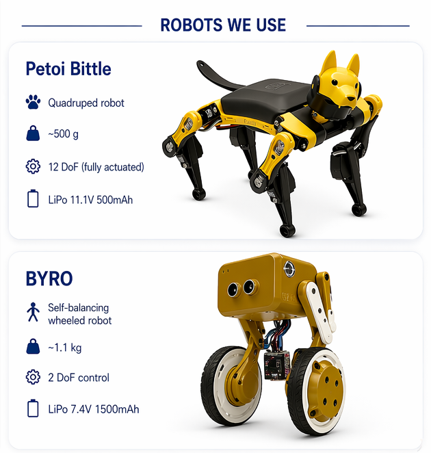
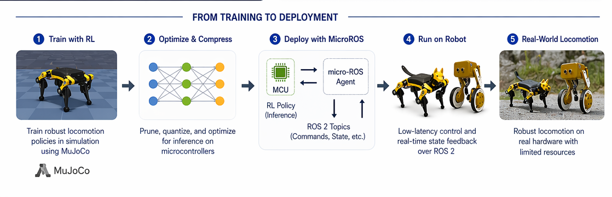
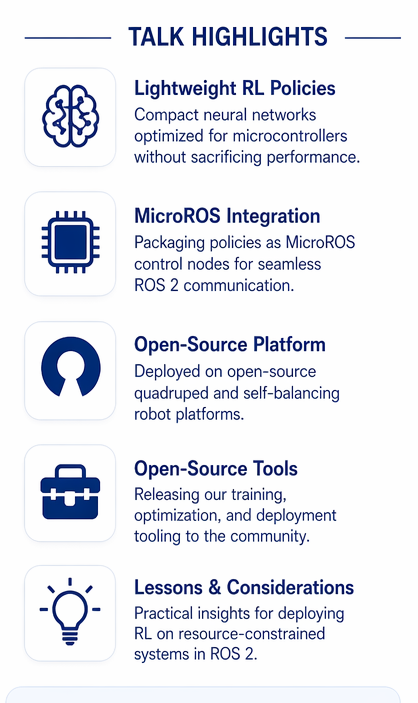

Abstract
Reinforcement learning policies have shown great promise for robotics locomotion, far exceeding the limits of what is possible with classic control theory. The spotlight has always been on large policies, meant to run on relatively powerful single-board computers like Raspberry Pi or Jetson Nano. In this talk, we instead focus on smaller policies, optimizing them to run on microcontrollers and package them as MicroROS control nodes.
The talk includes our experience deploying lightweight RL policies to an open-source robotic platform, sharing our open-source tools, lessons learned, and practical considerations for the ROS 2 community. The goal is to demonstrate a feasible path for running RL policies on MCUs within the ROS 2 ecosystem, which is still sparsely documented.

Talk Outline
| Section | Time | Focus |
|---|---|---|
| Introduction | 4 min | The gap in ROS 2 for edge AI and why MCU deployment matters for locomotion control. |
| Background | 4 min | What changes when deployment moves from SBCs to memory-, compute-, and power-constrained microcontrollers. |
| Technical Approach and Current Progress | 12 min | Simulation workflow, conversion pipeline, optimization steps, and MicroROS node integration. |
| Challenges and Future Work | 6 min | Memory limits, latency trade-offs, compatibility issues, and how the community can contribute. |
| Q&A | 4 min | Technical discussion, project direction, and collaboration opportunities. |
Technical Approach and Current Progress
The current workflow covers RL policies tried, PyTorch to TensorFlow Lite Micro conversion, model and runtime optimization, and MicroROS node integration. The aim is to make the simulation-to-hardware path explicit so attendees can see how a policy can communicate with the broader ROS 2 stack while still running in a constrained environment.
- Simulation benchmarks are already part of the validation flow.
- A MicroROS bridge prototype is part of the current implementation effort.
- The project is being shaped toward an open-source release once the code and supporting assets are ready.
- An off-the-shelf open-source robot is planned as the hardware demonstration target.

Challenges, Future Work, and Resources
The main roadblocks so far are memory constraints, latency trade-offs, and MicroROS compatibility quirks. That is part of the point of the talk: showing what did not work as well as what currently does, so others can build on the lessons instead of rediscovering them.
This talk is intended for anyone interested in edge AI within the ROS ecosystem, from beginners exploring RL to experienced embedded developers. No deep RL or embedded expertise is required, but the page will accumulate more technical artifacts as the work matures.
- Deployment hardware in scope: Arduino Uno Q, ESP32, and ESP32-S3.
- Core tools in use: PyTorch, TensorFlow Lite for Microcontrollers, MuJoCo, ROS 2, and MicroROS.
